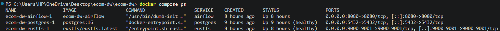
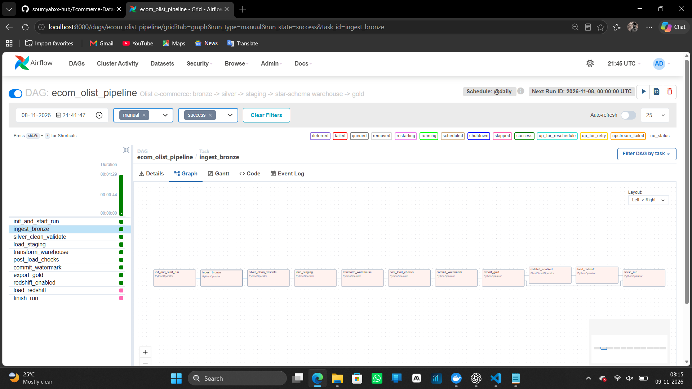
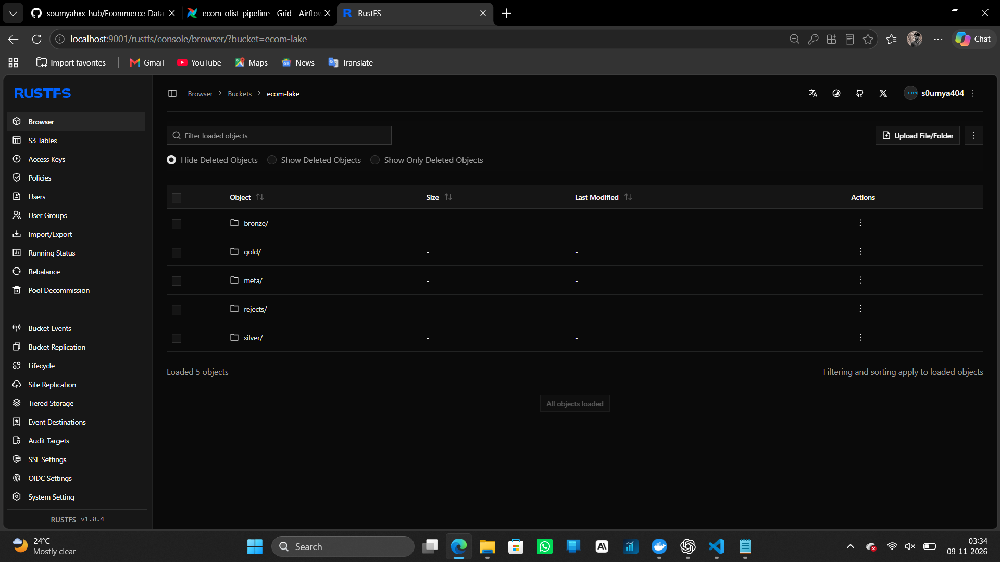
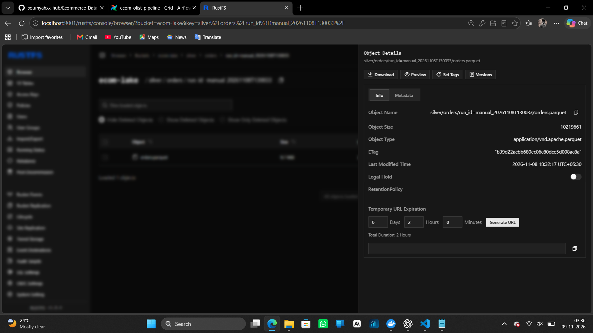
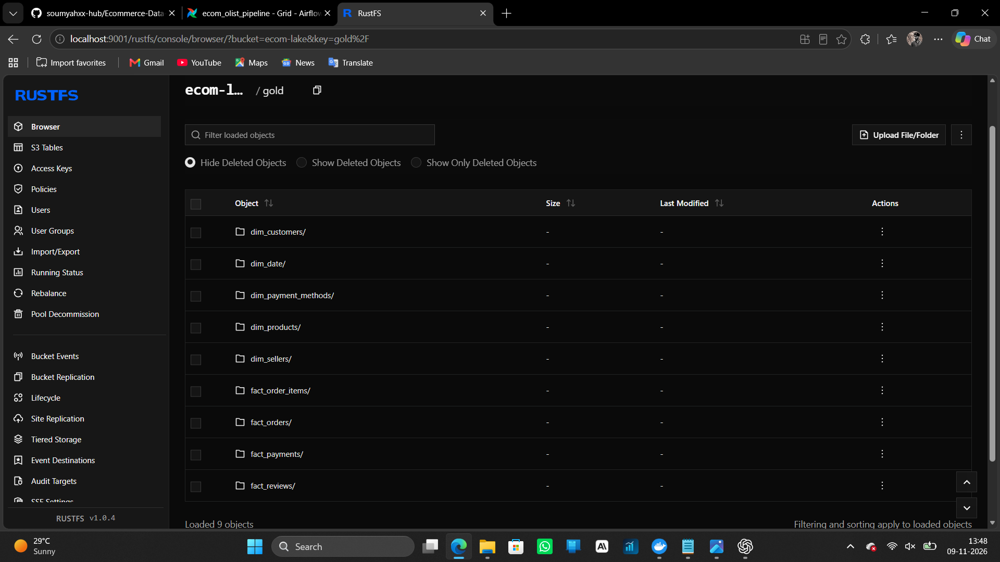
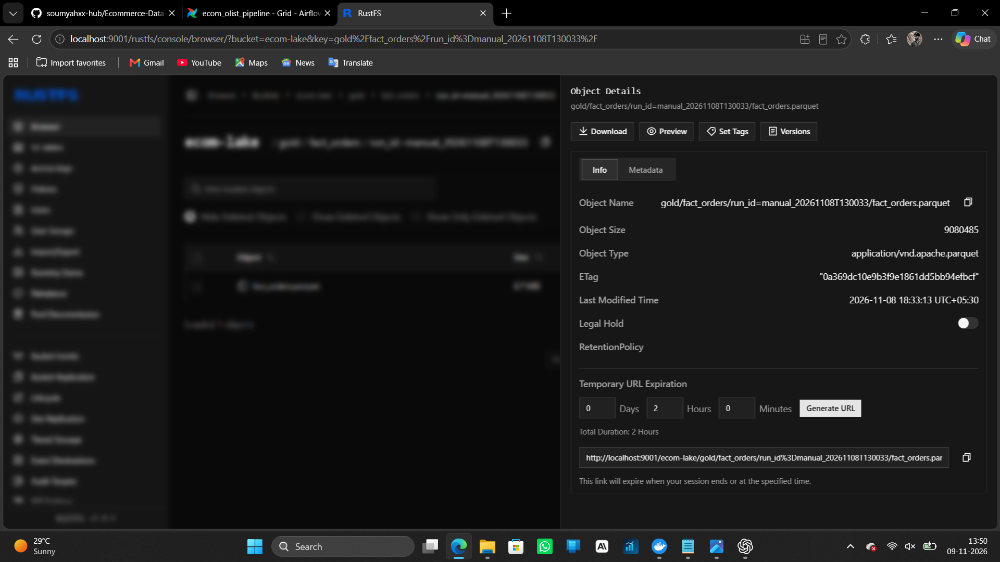
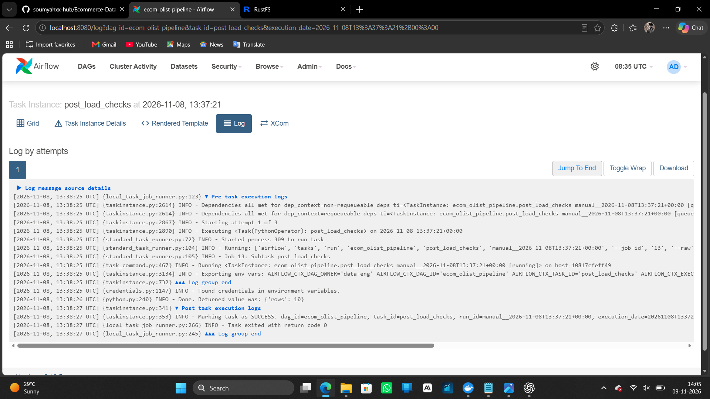

Project Overview
This project builds an automated e-commerce data platform that ingests
raw source data, processes it through multiple data layers, loads a
PostgreSQL data warehouse and generates analytical views.
Architecture
Source: Olist CSV datasets and exchange-rate data
Bronze: Raw ingested data stored in object storage
Silver: Cleaned, validated and transformed Parquet data
Gold: Curated warehouse-ready datasets
Warehouse: PostgreSQL staging and dimensional models
Analytics: SQL views for business metrics and reporting
Orchestration: Apache Airflow manages pipeline execution
Key Engineering Features
- Automated ETL pipeline orchestration using Apache Airflow.
- Medallion Architecture with Bronze, Silver and Gold layers.
- PostgreSQL staging and dimensional data warehouse.
- Parquet-based analytical data storage using RustFS.
- Data quality checks and rejected-record handling.
- SCD Type 2 and incremental processing support.
- Docker Compose-based local infrastructure.
- Automated project checks through GitHub Actions.
Pipeline Screenshots
01. Docker Services

02. Airflow DAG Execution

03. Medallion Storage

04. Silver Parquet Data

05. Gold Warehouse Exports

06. Gold Parquet Data

07. Data Quality Task Log
